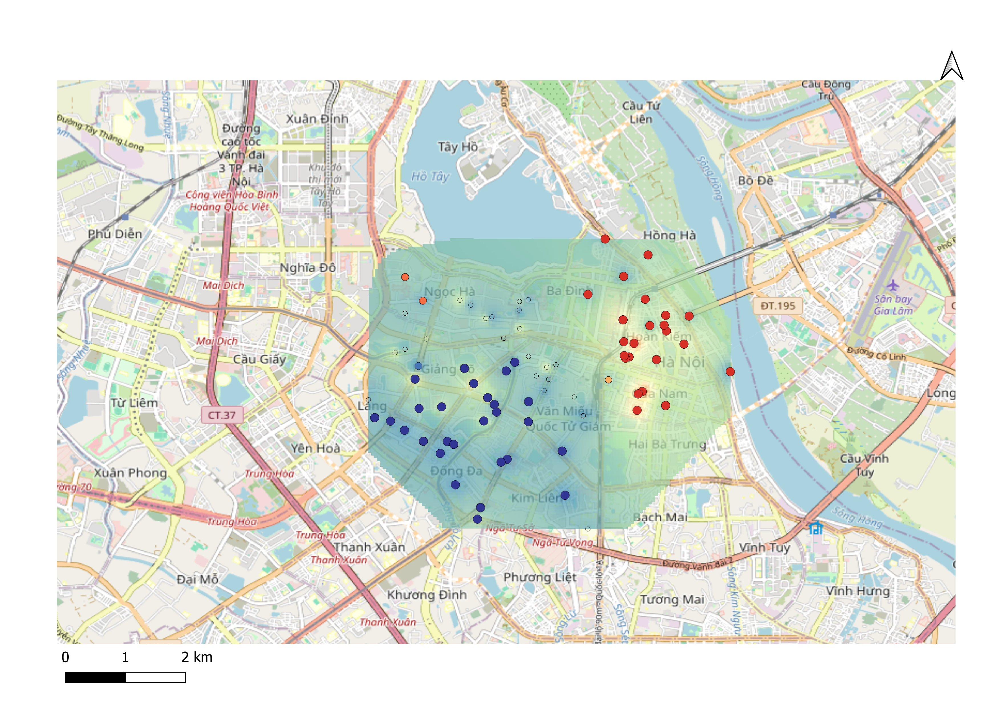
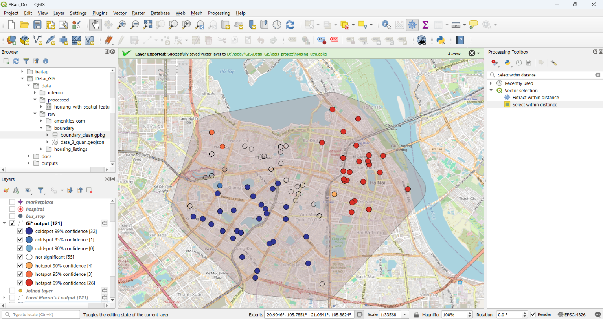
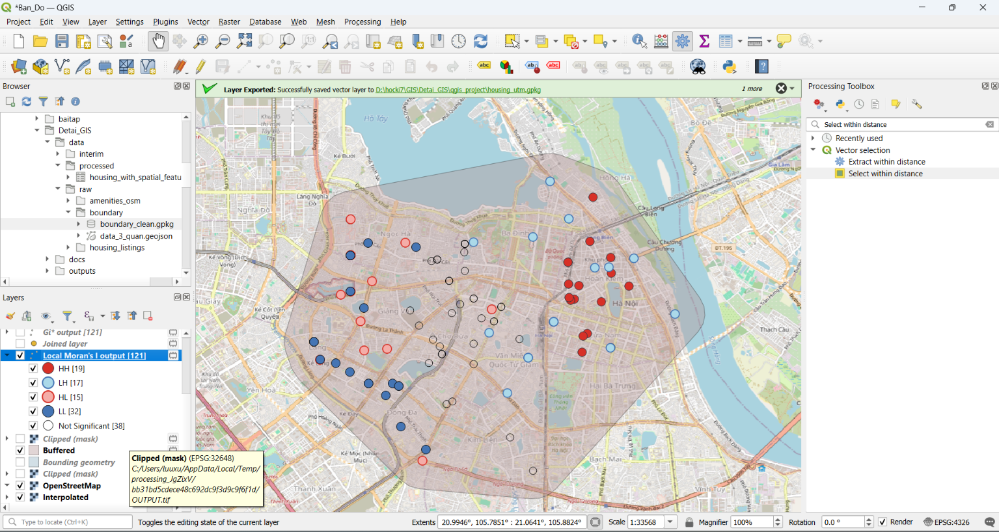
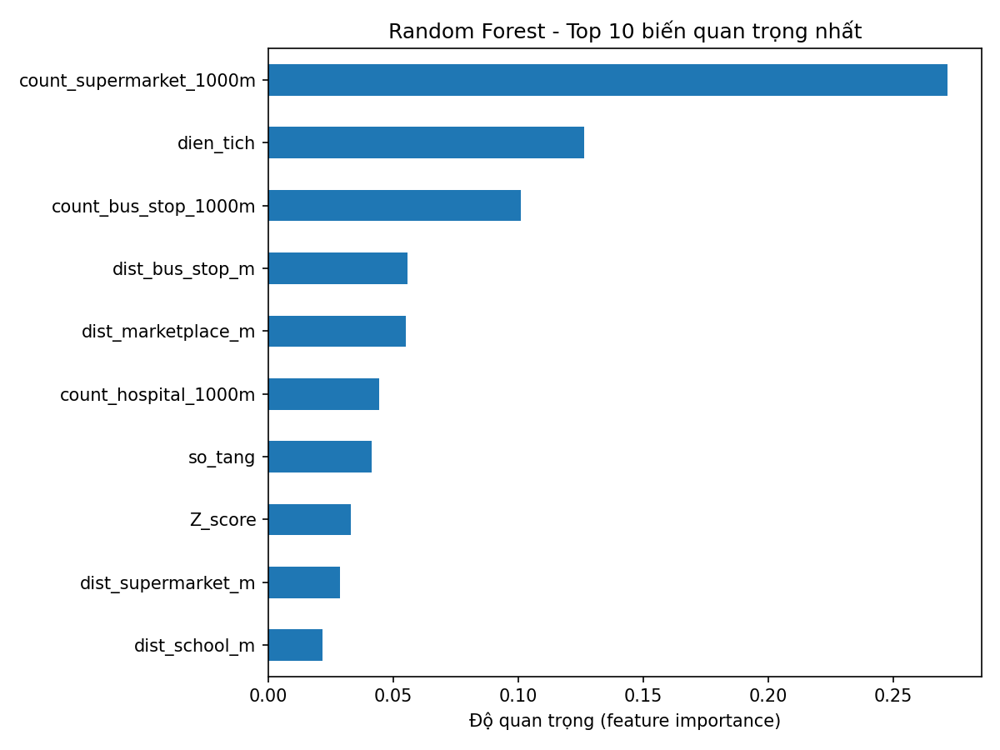
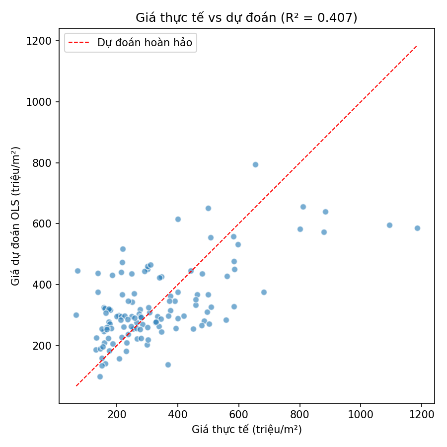
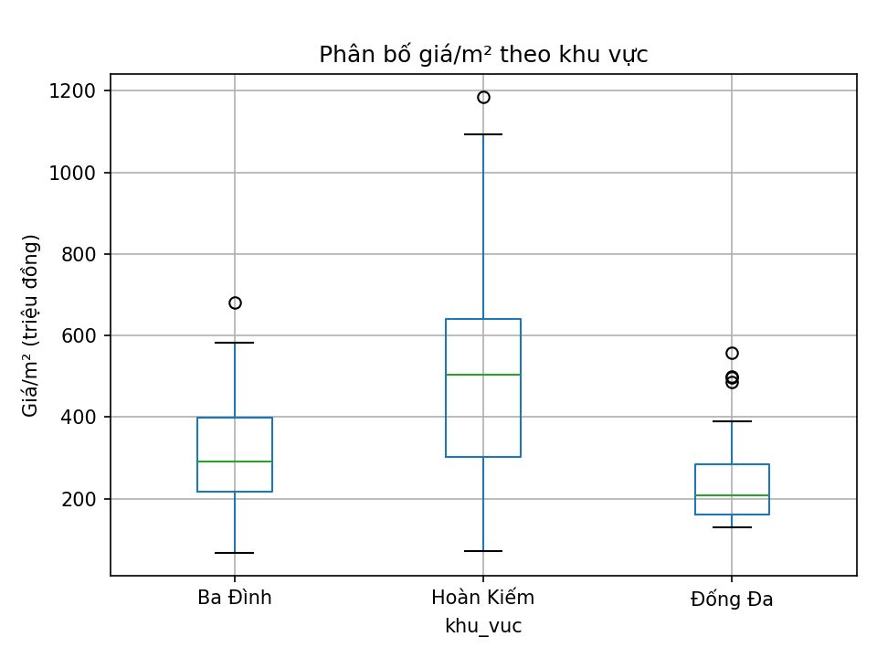
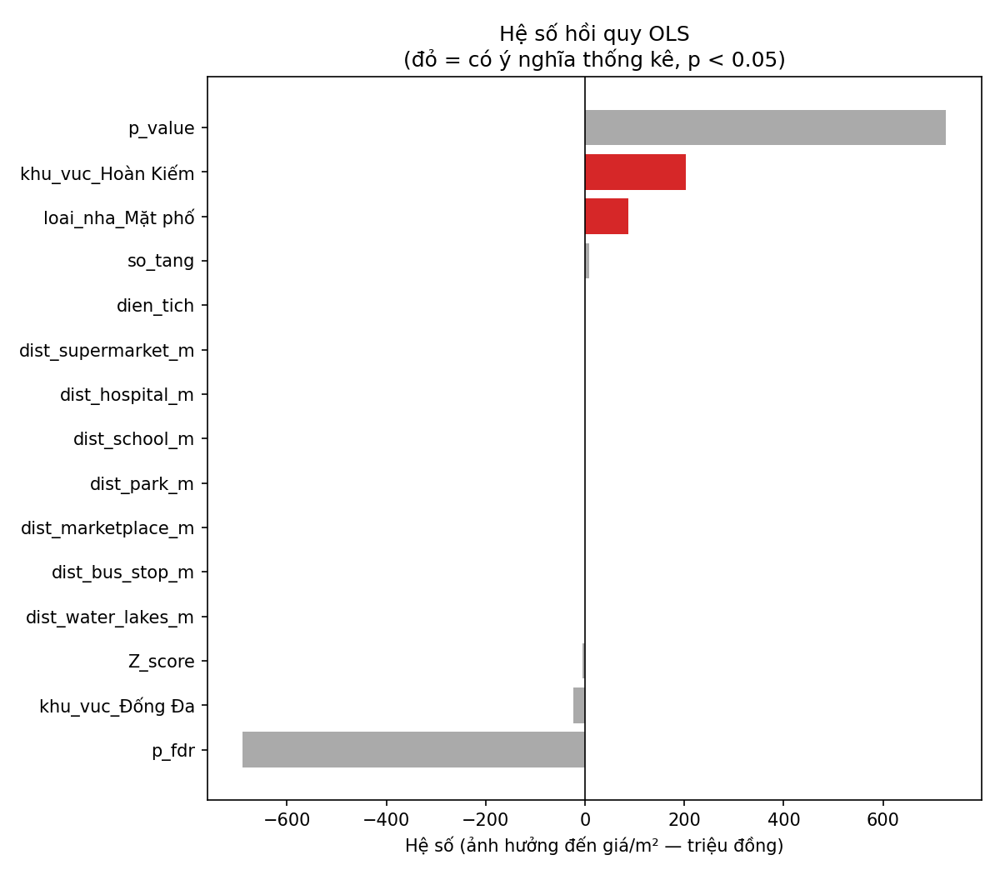
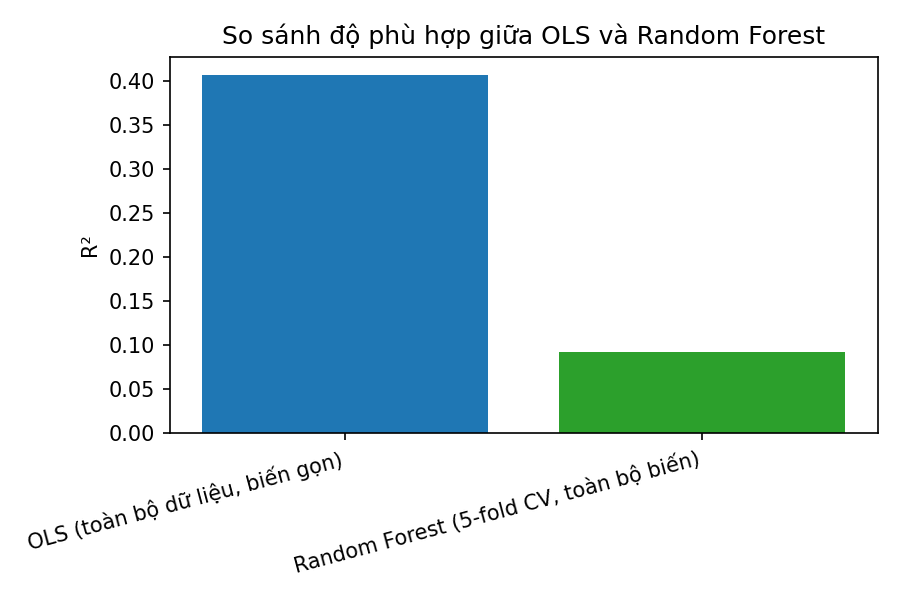

So sánh độ phù hợp R² (OLS vs Random Forest)
So sánh năng lực giải thích giá giữa OLS (15 biến) và Random Forest 5-fold CV (36 biến)
Mức giá trung bình theo từng Quận
So sánh đơn giá triệu VNĐ/m² giữa Hoàn Kiếm, Ba Đình và Đống Đa
Hệ số hồi quy Hedonic OLS (Ảnh hưởng đến giá nhà)
Các biến có hệ số màu đỏ là biến có ý nghĩa thống kê (p-value < 0.05)
Bảng ý nghĩa các biến không gian & thuộc tính trong mô hình
Trích xuất từ kết quả hồi quy statsmodels OLS trên 121 quan sát
| Biến độc lập | Hệ số hồi quy (β) | p-value | Ý nghĩa thống kê (p < 0.05) | Phân tích kinh tế đô thị & GIS |
|---|
Bộ Sưu Tập Bản Đồ Chuyên Đề & Biểu Đồ Từ QGIS / Python
Các sản phẩm bản đồ phân tích không gian đã xuất khẩu từ phần mềm QGIS và mô hình hồi quy

Bản đồ nội suy không gian IDW (Inverse Distance Weighting)
Mô phỏng trường giá nhà liên tục trên địa bàn 3 quận trung tâm Hà Nội từ 121 điểm dữ liệu khảo sát.

Phân tích điểm nóng Hot Spot (Getis-Ord Gi*)
Xác định cụm điểm nóng giá cao (Hot Spot) và điểm lạnh giá thấp (Cold Spot) có ý nghĩa thống kê 95% - 99%.

Tương quan không gian cục bộ (Local Moran's I)
Đo lường mức độ tương quan không gian, phân loại cụm High-High, Low-Low và phát hiện các ngoại lai không gian.

Tầm quan trọng của đặc trưng (Random Forest Importance)
Đánh giá mức độ đóng góp của từng biến tiện ích, diện tích và vị trí đối với dự báo giá nhà.

Giá thực tế vs Giá dự đoán (Mô hình Hedonic OLS)
Đường phân giác 45 độ minh họa mức độ tin cậy và phần dư của phương trình hồi quy Hedonic (R² = 0.407).

Biểu đồ hộp (Boxplot) Phân bố giá theo Quận
Quan sát trung vị, tứ phân vị và các điểm ngoại lai phản ánh mức độ phân hóa giá nhà ở 3 quận.

Hệ số hồi quy Hedonic OLS (OLS Coefficients)
Phân tích mức độ tác động của từng biến không gian và vị trí, làm nổi bật các biến có ý nghĩa thống kê (p < 0.05).

So sánh độ phù hợp R² giữa OLS và Random Forest
So sánh năng lực giải thích giá giữa OLS (R² = 0.407) và Random Forest 5-fold CV (R² = 0.092) trên cỡ mẫu 121 tin.